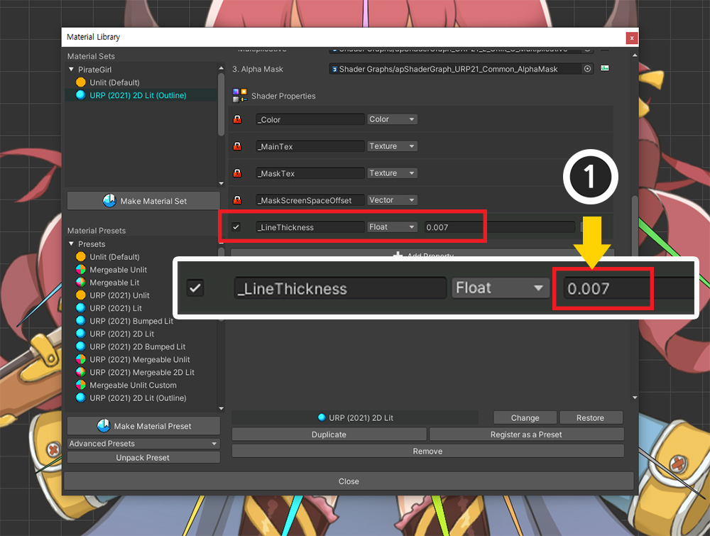

AnyPortrait > マニュアル > URPアウトラインシェーダーの作成
URPアウトラインシェーダーの作成
1.3.5
AnyPortraitの「マテリアルライブラリ」機能を利用すると、さまざまな「シェーダ（Shader）」を適用できます。
Unityの「URP（Universal Render Pipeline）」などの他のレンダリングパイプラインもサポートしているため、さまざまなテクニックを試すことができる利点があります。
このページでは、ユーザーの要求でURP環境でキャラクターの「アウトライン」を描くテクニックを実装するプロセスについて説明します。
このページでは、URPの特徴、そしてAnyPortraitのような「Transparentマテリアル」を持つ複数のメッシュがレンダリングされるシステムについてどのように悩みながら実装したかを見ることができます。
次の説明がアウトラインやさまざまな技術を実装するのに役立つことを願っています。
このページを読む前に、次のページを先に読むことをお勧めします。
- マテリアルライブラリ
- Universal Render Pipeline
- 「Shader Graph」でマテリアルを作成
アウトラインレンダリングを実装するためのアプローチ

アウトラインシェーダを実装するさまざまな方法がありますが、ここでは透明度を比較する簡単な方法を使用します。
レンダリングされるどのピクセルが次の条件を満たす場合、そのピクセルは「アウトライン」に対応すると見なすことができます。
- レンダリングされるピクセルの色は透明でなければなりません。
- 周囲の不透明なピクセルが存在します。
上記のようにテクスチャの色をサンプリングするときに、周囲の透明度を一緒にサンプリングする方法で、アウトラインが描かれるべき部分を簡単に見つけることができます。

この手法をすぐにシェーダとして適用すると、上記のような問題に遭遇します。
左は1つのメッシュ、主に「Sprite Renderer」での輪郭の様子です。
通常、アウトラインが描かれているのがわかります。
しかし、右側の場合、つまりAnyPortraitで作成されたキャラクターに対応するシェーダを適用すると、奇妙な結果を見ることができます。
内部の各メッシュにもアウトラインが生成されてしまったのです。

AnyPortraitのように複数のメッシュがある場合は、単純にシェーダ1つでアウトラインを抽出することはできません。
この問題は、他の2Dアセットや複数のメッシュを持つ3Dキャラクターでも同じように見えることがあります。

したがって、この問題を解決する最も簡単な方法は、少し後ろに同じキャラクターを配置してレンダリングすることです。
この方法は最も直感的であり、「Post Processing」を使用しない限り、2Dと3Dの両方で普遍的に使用される方法です。
このアプローチを実施するためには、次の方法が考えられる。
1. キャラクターを複製して後ろに配置するか、最初にレンダリングするようにした後、元と同じように動かす方法
2. 「マルチパスレンダリング(Multi-Pass Rendering)」を利用して、キャラクター1つが2回レンダリングされるようにする方法
もちろん、「1」の方法は最も便利な方法です。
この方法で実装したい場合は、AnyPortraitの「同期機能」が役に立ちます。
このページでは「2」のアプローチを実装します。
キャラクターを複製しないため、CPUリソースを消費する必要はなく、同期されていない動きによって発生する問題を予防することができ、最良の選択でしょう。
残念なことは、URP のような SRP では基本レンダリングパイプラインとは異なり、マルチパスレンダリングを基本的にサポートしないということです。
したがって、URP環境では、「ステンシル（Stencil）」と「LightMode」を利用してマルチパスを再現する方法を利用します。
参考 1
私たちのテストでは、古いAndroidデバイスで「ステンシル」が動作しないことがわかりました。
現在のほとんどの機器では、ステンシルが動作すると判断されます。
参考 2
このページは「12.1.1」バージョンのURPに基づいて書かれています。
URPは、バージョンによってはコードや機能に互換性がない場合があります。
シェーダグラフを修正してアウトラインシェーダを作成

説明用に構成された例です。
「URP 2D Lit」 マテリアルが適用された4つのキャラクターが配置されています。
適用されたマテリアルのシェーダを修正してアウトラインシェーダにしましょう。
以下のリンクから完成したシェーダとマテリアルをすぐにダウンロードしてご利用いただけます。
提供されるファイルは、URP バージョンが 「12.1.1 」でない場合、または 「Unity 2021 」バージョンでない場合には互換性がない可能性があります。
< アウトラインシェーダとマテリアルパッケージをダウンロード >

パッケージをダウンロードしてプロジェクトにインポートすると、上記のようにファイルが追加されます。
(1) 輪郭を描くシェーダーグラフとマテリアルです。 「Outline Material」を「Renderer Data」で輪郭を描くPassのマテリアルとして設定してください。
(2) AnyPortrait キャラクターに設定するステンシル用シェーダーアセットです。 それぞれ「URP 2D Lit」用と「URP Unlit」用、そして「Gamma Space」と「Linear Space」用に区分して作りました。
上記のファイルを利用する場合、このページの説明の中でシェーダを製作する内容は省略してもよい。

キャラクターを選択して「マテリアルライブラリ」を開きます。
(1) 現在適用されているURPのマテリアルプリセットを選択します。
(2) 変更するシェーダ資産を交換します。
対象となるシェーダアセットは次のとおりです。
- プロジェクト環境が「Gamma Color Space」の場合: 「Gamma > Basic Rendering > Alpha Blend」
- プロジェクト環境が「Linear Color Space」の場合: 「Linear > Basic Rendering > Alpha Blend」
「Alpha Blend」以外のマテリアルはアウトラインを持たないので、変更する必要はありません。
同じ理由でClippedシェーダも変更する必要はありません。

対象となる「シェーダグラフ」アセットをコピーして別のパスに貼り付けます。
このシェーダグラフアセットは「コード生成用」としてのみ使用される予定です。
コピーしたシェーダーグラフアセットを開きます。
(1) 「+ボタン」を押して「Float」タイプの属性を追加します。

(2) 追加したプロパティの名前を「LineThickness」に設定します。 （シェーダコードには「_LineThickness」と定義されています。）
(3) シェーダグラフを保存します。
(1) 再度シェーダグラフアセットを選択します。
(2) Inspectorの「View Generated Shader」ボタンを押します。
すでにコードが生成されている場合は、「Regenerate」ボタンを押してから「View Generated Shader」ボタンを押します。
スクリプトエディタが開き、シェーダグラフから生成されたシェーダコードを表示できます。
このコードを使用して新しいシェーダを作成します。
(1) Ctrl + A を押してすべてのコードを選択します。
(2) Ctrl + C を押して選択したすべてのコードをコピーします。
コピーしたシェーダコードを貼り付けるシェーダアセットを新しく作成します。
適切なパスでマウスを右クリックして「Create> Shader> Unlit Shader」をクリックして新しいシェーダーアセットを作成します。
このアセットは、シェーダグラフではなく、基本の「シェーダアセット（Shader）」でなければなりません。
なぜシェーダグラフのコードを複製して書き直すのですか？
URP用のシェーダは非常に複雑で、直接書くことはほとんど不可能です。
また、バージョンによってコードが変わるので、シェーダグラフを利用することが定石として知られています。
ただし、シェーダグラフでは、「Pass」を追加したり「Light Mode」を指定したりすることはできません。
したがって、多少面倒でも、シェーダグラフを最初に完成した後、ここで生成されたコードを複製して修正する方法が必要です。
シェーダグラフが改善され、ここで説明されているさまざまな手法が適用できる場合は、あえてコードを生成する方法は必要ありません。

作成したシェーダーアセットを開きます。
Unlit方式の簡単なシェーダコードを見ることができます。
このコードを使用するのではなく、現在のクリップボードに保存されている「シェーダグラフからコピーしたコード」をここに貼り付けて修正してみます。
(1) Ctrl + A を押してすべてのコードを選択します。
(2) Ctrl + V を押してクリップボードに保存されているコードを貼り付けます。

(1) シェーダグラフから生成された一時コードが (2) シェーダアセットに貼り付けられた結果です。
もちろん、2つのコードは完全に同じです。
それでは、シェーダーアセットを修正してみましょう。
（これからはシェーダグラフとシェーダグラフで生成されたコードはもう使用されません。）

(1) シェーダの名前を変更します。
(2) 「SubShader」の構文内に以下のコードを作成して追加します。
上記の画像で指している場所に追加するだけです。
Pass
{
// ステンシルに値を設定する「Pass」です。
// 「Renderer Data」で「Overrides」設定でステンシルを指定するので、ここでステンシルコードは作成しません。
// 「Light Mode」の名前を利用してマルチパスを実装します。
// 「SetStencilPass」という名前を覚えておいてください。
Tags { "LightMode" = "SetStencilPass" }
Blend SrcAlpha OneMinusSrcAlpha
// 「ColorMask」を「A」に設定すると、ステンシルが設定されてもレンダリングされません。
ZWrite Off
ColorMask A
HLSLPROGRAM
#pragma vertex vert
#pragma fragment frag
#include "Packages/com.unity.render-pipelines.universal/ShaderLibrary/Core.hlsl"
struct Attributes
{
float4 positionOS : POSITION;
float2 uv : TEXCOORD0;
};
struct Varyings
{
float4 positionHCS : SV_POSITION;
float2 uv : TEXCOORD0;
};
TEXTURE2D(_MainTex);
SAMPLER(sampler_MainTex);
// シェーダのプロパティのコードをここに書きます。
// レンダリングを最適化するために「SRP Batcher」を動作させるには、次の「CBUFFER」構文を他の「Pass」と同じにする必要があります。
CBUFFER_START(UnityPerMaterial)
float4 _MainTex_TexelSize;
float4 _MainTex_ST;
float4 _Color;
float _LineThickness;
CBUFFER_END
Varyings vert(Attributes IN)
{
Varyings OUT;
OUT.positionHCS = TransformObjectToHClip(IN.positionOS.xyz);
OUT.uv = TRANSFORM_TEX(IN.uv, _MainTex);
return OUT;
}
half4 frag(Varyings IN) : SV_Target
{
// 「_LineThickness」の長さだけ離れて位置するピクセルの透明度をチェックします。
float offset1 = _LineThickness;
float offset2 = _LineThickness * 0.7f;
float alpha_0 = SAMPLE_TEXTURE2D(_MainTex, sampler_MainTex, IN.uv).a;
// 周囲の8つのピクセルの透明度をチェックします。
float alpha_1 = SAMPLE_TEXTURE2D(_MainTex, sampler_MainTex, IN.uv + float2(offset1, 0)).a;
float alpha_2 = SAMPLE_TEXTURE2D(_MainTex, sampler_MainTex, IN.uv + float2(-offset1, 0)).a;
float alpha_3 = SAMPLE_TEXTURE2D(_MainTex, sampler_MainTex, IN.uv + float2(0, offset1)).a;
float alpha_4 = SAMPLE_TEXTURE2D(_MainTex, sampler_MainTex, IN.uv + float2(0, -offset1)).a;
float alpha_5 = SAMPLE_TEXTURE2D(_MainTex, sampler_MainTex, IN.uv + float2(offset2, offset2)).a;
float alpha_6 = SAMPLE_TEXTURE2D(_MainTex, sampler_MainTex, IN.uv + float2(-offset2, offset2)).a;
float alpha_7 = SAMPLE_TEXTURE2D(_MainTex, sampler_MainTex, IN.uv + float2(-offset2, -offset2)).a;
float alpha_8 = SAMPLE_TEXTURE2D(_MainTex, sampler_MainTex, IN.uv + float2(offset2, -offset2)).a;
half totalAlpha = alpha_0 + alpha_1 + alpha_2 + alpha_3 + alpha_4 + alpha_5 + alpha_6 + alpha_7 + alpha_8;
float4 c = float4(0, 0, 0, 0);
c.a = saturate(totalAlpha * _Color.a);
// 「discard」が呼び出されると、ステンシルが更新されない点を使用して、アウトラインである部分だけがステンシル値を格納するようにします。
// ピクセルが不透明な場合、アウトラインではなく画像の内側に対応します。
if (alpha_0 > 0.5f)
{
discard;
}
// 周囲に不透明なピクセルがない場合は、アウトラインではなくマージンに対応します。
if (c.a < 0.02f)
{
discard;
}
return c;
}
ENDHLSL
}
コードの詳細な説明はそれぞれのコメントを参照してください。
上記のコードをシェーダコード内に追加すると、次の画像のようになります。
特にここで注目すべき点は、「Light Mode」と「CBUFFERの構文」です。
(1) URPは「Light Mode」を使用してレンダリングされるパスを区別します。
このプロパティを使用して、文字がレンダリングされる前にステンシルを作成するパスを最初に実行させます。
ここで作成した「Light Mode」の名前である「SetStencilPass」を覚えておきましょう。
(2) URPを含む「SRP」は、レンダリング性能を向上させるためにマテリアルの特性が似ている場合、少ないドローコールでもできるだけ多くのオブジェクトをレンダリングします。
この特性を「SRP Batcher」と呼びます。
「SRP Batcher」を動作させるには、シェーダコード内のすべてのプロパティ構文、つまり「CBUFFER_START ~ CUBFFER_END」内のコードが同じである必要があります。

(1) 完成したシェーダーアセットを選択します。
(2) 問題なく作成した場合は、「SRP Batcher」属性が「compatible」であることがわかります。

キャラクターを開き、このシェーダを適用してみましょう。
(1) マテリアルライブラリを開き、このマテリアルセットの名前を変更します。
名前を変更するのは、このマテリアルセットをプリセットで保存して他のキャラクターにも簡単に適用するためです。
(2) 先ほど作成したシェーダーアセットを「Alpha Blend」項目に適用します。

前の手順で追加したプロパティ「_LineThickness」を指定してみましょう。
(1) 「Add Property」ボタンを押します。
(2) 名前を「_LineThickness」に設定します。
(3) タイプは「Float」に設定します。
(4) アウトラインの太さはテクスチャ座標系である「UV」を基準とするため、1以下の非常に小さい値を入力します。
まだ適切な値がわからないので、適度に小さい値を入力してください。

このマテリアルセットを適用するには、プリセットで作成して他のキャラクターにもすばやく設定できます。
(1) 「Register as a Preset」ボタンを押します。
(2) プリセットで追加されたものが表示されます。
AnyPortrait v1.3.5に基づいて、シェーダアセットの変更直後にプリセットとして保存すると、変更履歴が反映されないバグがあります。
プリセットで保存する前に、マテリアルライブラリをオフにしてからもう一度オンにしてください。
このバグは、次のアップデートで修正される予定です。

Bakeを実行します。

他のキャラクターにも同じことをしなければなりませんが、保存したプリセットを使うと面倒なプロセスを減らすことができます。
別のキャラクターを開き、マテリアルライブラリを実行します。
(1) 「Make Material Set」ボタンを押して新しいマテリアルセットを追加します。
(2) 上記の手順で作成したアウトラインレンダリング用のプリセットを選択します。
(3) 「Select」ボタンを押します。

(1) 追加したマテリアルセットを選択します。
(2) 「Default Material」ボタンを押して「ON」状態にします。
(3) 作成したシェーダアセットが適用された状態であることを確認します。
これをすべてのキャラクターに同じように行います。
アウトラインレンダリングシェーダを作成して「Renderer Data」を設定
次のタスクは、ステンシルを認識して実際にアウトラインレンダリングになるようにすることです。
かなり複雑なステップを経るので、一つずつやってみてください。

アウトラインが描画されるオブジェクトを区別するためにレイヤーを追加します。
(1) 「Project Settings > Tags and Layers」を選択します。
(2) 「Layers」に新しいレイヤーを追加します。 ここでは、「OutlineCharacter」という名前のレイヤーを追加しました。
(1) キャラクターをすべて選択します。
(2) キャラクターのレイヤーを設定したばかりの「OutlineCharacter」に変更します。
（子オブジェクトのレイヤーも一緒に変更します。）

先のプロセスで作成したシェーダは、アウトラインになる位置にステンシルに保存する役割をします。
まだアウトラインをレンダリングするシェーダとマテリアルは作成していません。
アウトラインをレンダリングするシェーダを作成しましょう。
「Projects」タブで右クリックし、「Create > Shader Graph > URP > Unlit Shader Graph」を選択して新しいシェーダグラフを作成します。
なぜ「Sprite Unlit」シェーダではなく「Unlit」シェーダを使用するのですか？
2Dゲームでは、「Sprite Unlit」シェーダは半透明レンダリングをサポートし、「Unlit」シェーダは不透明レンダリングのみをサポートするため、通常は「Sprite Unlit」シェーダを使用します。
しかし、URPでアウトラインを描く「Pass」は、各オブジェクトごとに動作するのではなく、一括で動作するため、アウトラインのレンダリング順序を制御できないという問題があります。
「Opaque」シェーダは、「Pass」が異なっても「Z位置(Depth)」を比較してレンダリング順序が適切に決定されるのに対し、「Transparent」シェーダはZ位置を利用できないため、レンダリング順序を制御できません 。
その結果、「Transparent 」シェーダでアウトラインを一括レンダリングすると、常にすべてのオブジェクトの後ろまたは前にのみレンダリングされます。
そのため、Z位置を利用するためにレンダリング品質が低下しても「Unlit」シェーダを利用しなければなりませんでした。
「Sprite Unlit」シェーダを利用するためには、SRPがオブジェクトごとに「Multi-Pass」をサポートするか、AnyPortraitでこれのためのマルチマテリアル機能を追加しなければなりません。 。
(1) 生成されたシェーダグラフを開きます。

(1) 「OutlineColor」という名前の「Color」プロパティと、「ZBias」という名前の「Float」プロパティを追加します。
「OutlineColor」プロパティはアウトラインの色を意味し、「ZBias」はアウトラインがキャラクターより少し後ろにレンダリングされるようにします。

上記のようにシェーダグラフを作成します。
珍しい点は、「World」座標系に基づいて「ZBias」だけレンダリング位置を後方に移動させることです。
（新しいタブで開くと、元のサイズの画像を見ることができます。）

アウトラインを描く「Pass」で利用するアウトラインマテリアルを作りましょう。
(1) 新しい「マテリアル（Material）」を作成して選択します。
(2) マテリアルのシェーダを直前に作成したアウトラインシェーダに変更します。
(3) 「アウトラインカラー」と「ZBias」を設定します。 ここでは「ZBias」を「1」に設定しました。

次にURPの「Renderer Data」を修正するステップです。
(1) プロジェクトに適用された「Universal Render Pipeline Asset」を選択します。
(2) 「Renderer List」で現在適用されている「Renderer Data」が表示されます。
この「Renderer Data」の設定を修正して特殊なレンダリング「Pass」を追加してみましょう。

(1) 現在適用されている「Renderer Data」を選択します。
(2) 「Add Renderer Feature」ボタンを押します。

(3) 「Render Objects」を選択して追加します。

追加された「Render Objects」に「アウトラインに対応する領域にステンシルを設定する」の役割を与えてみましょう。
上記のように設定します。
(1) 名前を適切に設定した後、「Event」を「BeforeRenderingOpaques」に設定します。
不透明なメッシュが描画される前に、アウトライン領域にステンシルを設定するためです。
イベントの名前がほとんど似ているため、混乱しやすいので注意してください。
(2) 「Queue」を「Transparent」に設定し、「Layer Mask」の値を先に設定した「OutlineCharacter」に変更します。
これで、AnyPortraitキャラクターに対してこのレンダリングイベントが動作します。
(3) 「LightMode Tags」の「+ボタン」を押し、「SetStencilPass」と入力します。
上記で作成したシェーダのコードから登場した「SetStencilPass」がここで使われています。
(4) アウトライン領域にステンシルを設定するには、「Overrides」項目を開き、次のように設定します。
- 「Stencil」を有効にします。
- 「Value」はゼロ以外の値を指定します。 ここでは「5」に設定し、以下のStencilプロパティでも同じに設定する必要があります。
- 「Compare Function」を「Always」に設定します。
- 「Pass」を「Replace」に設定します。
アウトラインが描画される位置のステンシルには、「5」という値が書き込まれます。

同様に、「Add Render Feature」ボタンを押して、「Render Objects」をもう1つ追加します。
このレンダリングイベントは、「ステンシルを認識してアウトラインを描く」の役割を果たします。
(1) 名前を適切に設定した後、「Event」を「AfterRenderingOpaques」に設定します。
他の不透明なメッシュが描かれた後、輪郭を描きたいのです。
(2) 「Queue」を「Transparent」に設定し、「Layer Mask」の値を「OutlineCharacter」に設定してステンシルを認識する準備をします。
(3) 「Overrides」を開き、「Material」の前に作成した「アウトラインマテリアル」をここに設定します。
このレンダリングパスが動作するときは、キャラクターのマテリアルではなく、アウトラインマテリアルが代わりに使用されます。
(4) 「Depth」、「Write Depth」を有効にし、「Depth Test」をデフォルト値の「Less Equal」に設定します。
「Depth Test」を行うと、ピクセル単位でアウトラインが他のオブジェクトに隠れるかどうかが決まります。
(5) 最初に動作するレンダリングイベントで作成されたステンシル値を認識し、その部分のみをレンダリングするように設定します。
- 「Stencil」を有効にします。
- 「Value」を前に設定した値（ここでは「5」）と同じ値に設定します。
- 「Compare Function」を「Equal」に設定します。
- 「Pass, Fail」をすべて「Keep」に設定します。
設定がすべて完了したら、上記の結果を見ることができます。
やや粗いですが、アウトラインが見えます。
アウトラインの太さを補正
アウトラインはレンダリングされますが、まだきれいではありません。
輪郭の太さやメッシュの形状を変更して結果を補正しましょう。

キャラクターを選択して「マテリアルライブラリ」を開きます。
(1) 「_LineThickness」の値を調整して、アウトラインの太さを適切に修正します。
この値は「UV」座標系に基づいているため、テクスチャのサイズによって適切な値の範囲が異なります。

アウトラインの太さを修正すると、かなりきれいな結果が現れました。

上記のように、メッシュに余白がほとんどないため、アウトラインが描画されるスペースがない可能性があります。
メッシュを修正する必要があります。
（可能であれば、アニメーションを作成する前に事前に修正しておくことをお勧めします。）

上記のようにアウトラインが描画されるようにメッシュを変更します。

これで、アウトラインが正常に描かれているのがわかります。

アウトラインが適切に補正された結果です。
アウトラインマテリアル設定による違い
「アウトラインマテリアル」には「OutlineColor」、「ZBias」プロパティがあります。
このプロパティで結果がどのように変わるかを見てみましょう。

(1) 「アウトラインマテリアル」を選択します。
(2) 「OutlineColor」を「赤色」に変更してみました。
(3) アウトラインの色が「赤色」に変わることがわかります。

次に「ZBias」による結果です。
「ZBias」値が小さすぎると、アウトラインがキャラクターのメッシュに近いところに描画されます。
この場合には、キャラクター内部のメッシュ間でも現れる問題が発生します。
「ZBias」値が大きすぎる場合、アウトラインはキャラクターメッシュから遠い距離の後ろに描画されます。
この場合、輪郭がキャラクターの間に現れない問題が発生します。
実際にキャラクターを配置してみて、「ZBias」を適切に設定してください。

アウトラインは不透明なマテリアルで、Z位置に基づいてレンダリングするかどうかを決定します。
この特性は、他のメッシュと同様にレンダリングされた場合でも、アウトラインが常に非表示になる、または常に表示される問題を回避する利点があります。

しかし、他のオブジェクトのZ位置がキャラクターに非常に近い場合、「キャラクターは見えますが、アウトラインは見えない状態」があるかもしれません。
キャラクターとオブジェクトのZ位置を適切に指定することをお勧めします。
レンダリングプロセス
「Multi-Pass」レンダリング手法は、レンダリングパフォーマンスを大幅に低下させる問題があります。
ただし、URPを含む「SRPの最適化機能」（SRP Batcher）が正常に動作する場合は、その負担を少し減らすことができます。
レンダリングがどのように処理されるかを詳しく見てみましょう。

Unityの「Frame Debugger」を実行します。
(1) アウトラインを含むURPのレンダリングプロセスを見ることができます。
(2) ステンシルの設定処理です。 1回の「SRP Batch」しか記録されていないことがわかります。
(3) ステンシルを認識して輪郭を描く過程です。 同様に、1回の「SRP Batch」が記録されました。
(4) キャラクターメッシュが実際に描かれる過程です。
「SRP Batcher」が動作している場合、ステンシルの設定とアウトラインの描画プロセスは、合計2回の「SRP Batch」のみで動作します。
描画回数が多くないだけに最適化だけがうまくいけば、レンダリング性能に対する負担が大きくないことがわかります。

上の画像はレンダリングプロセスを1つずつ示しています。
1. ステンシルを設定する段階では 1 回のレンダリング過程を経ますが実際に描かれることはありません。
2. すべてのキャラクターの輪郭が一度に描かれます。
3. 数回のレンダリングを経てキャラクターのレンダリングが完了します。